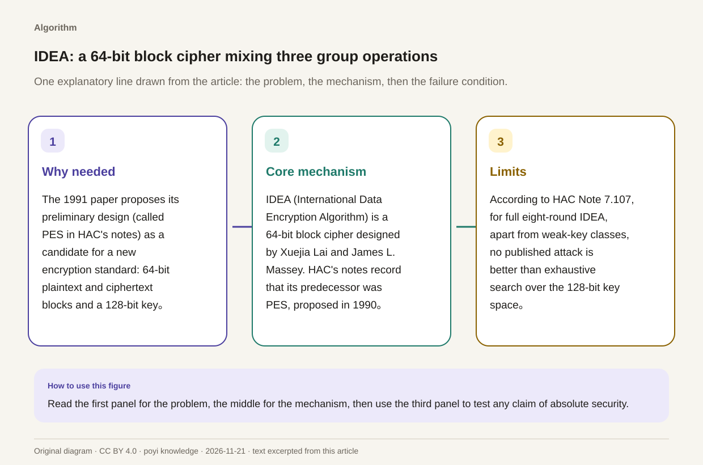
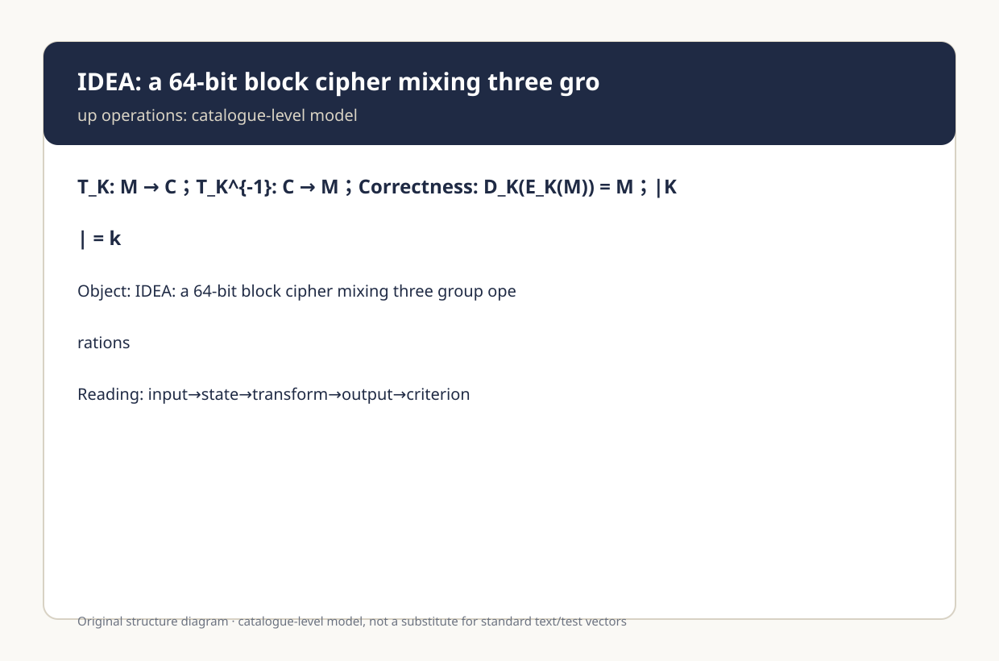

Principles
Algorithm: International Data Encryption Algorithm (IDEA 国际数据加密算法). IDEA (International Data Encryption Algorithm) is a 64-bit block cipher designed by Xuejia Lai and James L. Massey. HAC's notes record that its predecessor was PES, proposed in 1990, that modifications produced IPES, and that IPES was commercialized under the name IDEA; the IETF draft cites Lai's 1992 dissertation, "On the design and security of block ciphers", as IDEA's reference, and HAC calls it the primary reference. HAC describes IDEA as "Based in part on a novel generalization of the Feistel structure": a 64-bit plaintext is split into four 16-bit words X1, X2, X3 and X4, and all four words take part in every round, so it is not a classical Feistel network that updates only one half; HAC calls the multiplication-addition mixing component within the round the MA structure. IDEA uses a 128-bit key and derives 52 16-bit subkeys: six for each of eight rounds and four for the output transformation. HAC stresses that the design mixes three group operations on 16-bit subblocks:
- bitwise XOR, written ⊕;
- addition modulo 2^16, written +;
- multiplication modulo 2^16+1, written ⊗, with 0 representing 2^16 (65536) and a result of 2^16 written back as 0. Each round first applies four keyed operations and then mixes through the MA structure:
X1 = X1 ⊗ K1
X4 = X4 ⊗ K4
X2 = X2 + K2
X3 = X3 + K3
t0 = K5 ⊗ (X1 ⊕ X3)
t1 = K6 ⊗ (t0 + (X2 ⊕ X4))
t2 = t0 + t1
X1 = X1 ⊕ t1
X4 = X4 ⊕ t2
a = X2 ⊕ t2
X2 = X3 ⊕ t1
X3 = a
After round 8 the output transformation uses only multiplication and addition:
Y1 = X1 ⊗ K(9)1
Y4 = X4 ⊗ K(9)4
Y2 = X3 + K(9)2
Y3 = X2 + K(9)3
The key schedule splits the 128-bit key, in big-endian order, into eight 16-bit words that become the first eight subkeys. It then cyclically shifts the whole 128-bit key left by 25 bits, splits it into eight words again, and repeats until all 52 subkeys are assigned. HAC Table 7.12 lists the subkeys used in each round of the worked example. Decryption uses the same round structure but derives its subkeys from the encryption subkeys. According to HAC Table 7.11, round 1 uses inverses of the output-transformation subkeys K(9)1..K(9)4 and takes K5/K6 from round 8; rounds 2 through 8 use inverses of round 10-r's K1..K4, but the additive inverses of K2 and K3 are swapped, and K5/K6 come from round 9-r; the last round uses inverses of round 1's K1..K4. K1 and K4 take multiplicative inverses modulo 2^16+1, while K2 and K3 take additive inverses modulo 2^16. Because 0 represents 2^16 in the multiplication, and 2^16 is its own multiplicative inverse, the multiplicative inverse of 0 is defined to be 0.

Why it matters
The 1991 paper proposes its preliminary design (called PES in HAC's notes) as a candidate for a new encryption standard: 64-bit plaintext and ciphertext blocks and a 128-bit key, with a design concept of "mixing operations from different algebraic groups" and the goals of confusion, diffusion, and convenient hardware and software implementation. HAC records that IDEA is the commercialized version of the modified IPES; HAC's description of IDEA likewise centers on mixing three group operations. In this article's analysis, IDEA does not merely replace DES's bit permutations with larger tables; it alternates XOR, addition modulo 2^16 and multiplication modulo 2^16+1. These operations come from structurally different algebraic systems, and HAC treats their algebraic incompatibility as the heart of the design.
HAC's notes also state that the MA structure makes IDEA "complete" after a single round: every output bit depends on every input bit. This property shows that the designers sought rapid diffusion rather than relying on many identical rounds to accumulate it.
The differential-analysis history is part of the motivation. HAC records that the earlier PES was broken by the generalized differential cryptanalysis of Lai, Massey and Murphy, although the attack required all 2^64 possible ciphertexts. Subsequent changes reversed the group operations keyed by K2 and K4, altered the 16-bit permutation after each stage, and changed only the decryption key schedule. The modified version, IPES, was commercialized under the name IDEA. The IETF draft likewise describes IDEA as "particularly strengthened to protect against differential cryptoanalysis attacks" (the spelling and the trailing word are the draft's).
The IETF draft describes IDEA as a joint project of the Swiss Federal Institute of Technology in Zurich and Ascom, aimed at developing a strong encryption algorithm that could replace DES. Here DES is historical motivation and a replacement target, not a component of IDEA; this article therefore does not treat DES as a mandatory prerequisite for learning IDEA, and mentions it only in the historical context.
Applications
The 2000 Internet-Draft draft-ietf-smime-idea-07 proposed using IDEA in CMS/S/MIME: the key length is fixed at 128 bits, CBC is recommended for content encryption, the initialization vector is 8 octets, and the draft defines object identifiers plus a two-pass CBC key-wrap procedure for content-encryption and key-encryption keys. The draft has expired; this article treats it as a standardization proposal of its time and does not claim wide deployment.
HAC Example 7.106 gives a complete encryption sample:
K = 0001 0002 0003 0004 0005 0006 0007 0008
M = 0000 0001 0002 0003
C = 11fb ed2b 0198 6de5
Table 7.12 also lists the six subkeys and the four 16-bit words at the end of every round. After round 1 the state is 00f0 00f5 010a 0105; after round 8 it is 0a24 0098 ec6b 4925; the output transformation uses subkeys 0080 00c0 0100 0140. This article's verification script recomputes these intermediate values, not only the final ciphertext.
GnuPG 1.4's IDEA self-test provides 11 known-answer vectors. The first is the HAC sample above; vectors 8 through 11 use different 128-bit keys, so they also exercise different key-schedule inputs. This article encrypts all 11 vectors and decrypts every ciphertext back to its plaintext.
IDEA itself defines only a block cipher, not a mode of operation, padding, IV management or message authentication. When IDEA is used on real data, the mode and protocol must handle the IV, padding and integrity; the 8-octet IV in the CBC draft is a mode-level convention, not part of the IDEA block algorithm.

Limits & attacks
According to HAC Note 7.107, for full eight-round IDEA, apart from weak-key classes, no published attack is better than exhaustive search over the 128-bit key space; the 2000 draft likewise states that no known attack is better than exhaustive search over the 128-bit key space. HAC considers IDEA's security bounded only by the relatively small 64-bit block length. These are the conclusions of those sources at the time they were written; this article does not turn them into a permanent guarantee against every later attack.
HAC's notes record in detail the weak-key classes found by Daemen: the largest contains 2^51 keys, membership can be tested with two encryptions plus a small number of computations, and the key can then be recovered with 16 chosen plaintext differences, about 2^16 group operations and about 2^17 key-search encryptions; the probability that a random key falls in this class is 2^-77. Lai had earlier observed smaller weak-key blocks, and Meier's analysis found no attack feasible against full eight-round IDEA, supporting Lai's conclusion that IDEA appears to resist differential cryptanalysis after four of its eight rounds (HAC uses "appears"). This article keeps those numbers, models and conditions as HAC states them and does not reduce them to either IDEA being broken or IDEA being absolutely secure.
The 64-bit block length imposes another bound. HAC Note 7.8 explains that with a small block length n, a matching pair becomes likely after about 2^(n/2) blocks; for IDEA's n=64 the birthday scale is about 2^32 blocks. This article therefore treats the safe data volume under one key as limited, but this is a generic birthday analysis, not a 2^32 theorem specific to IDEA. HAC Note 7.107 likewise identifies only the 64-bit block length as the security bound.
At the implementation level, multiplication modulo 2^16+1 usually needs 32-bit intermediate results and conditional correction, or a table lookup; such operations are not constant-time in ordinary software. This article's teaching implementation uses JavaScript integers and BigInt directly, is not constant-time, and does not test cache, timing or fault-injection side channels. IDEA also provides no integrity: flipping ciphertext changes the corresponding plaintext, but the block cipher itself cannot detect it, and integrity requires AEAD or encrypt-then-MAC.
History
IDEA's predecessor was PES, proposed by Lai and Massey in 1990. The 1991 paper "A Proposal for a New Block Encryption Standard" appeared in the EUROCRYPT '90 proceedings (Lecture Notes in Computer Science, vol. 473, pp. 389-404); HAC's notes call that paper's preliminary design PES, not IDEA. After PES was broken by generalized differential cryptanalysis, the design was changed by reversing group operations, altering the inter-stage permutation and modifying the decryption key schedule; the result, IPES, was commercialized as IDEA. The IETF draft cites Lai's 1992 dissertation, "On the design and security of block ciphers" (ETH Series in Information Processing, vol. 1, Hartung-Gorre Verlag), as IDEA's reference; HAC calls it the primary reference.
Appendix C of the IETF draft states that Ascom holds the IDEA patent and offers a non-exclusive license under the IETF intellectual-property procedures; the draft also says non-commercial use was free. The GnuPG 1.4 source header records the expiry dates of the related patents: EP0482154 in Europe and JP3225440 in Japan expired on 2011-05-16, and US 5,214,703 expired on 2012-01-07. This article reports the patent status as those sources record it and does not offer legal advice.
The IDEA entity in this article is the eight-round 64-bit block cipher that resulted from modifying PES into IPES and was commercialized as IDEA; the 1991 paper is the PES paper, and the 1992 dissertation is the primary IDEA reference. PES is its predecessor, DES is the algorithm it aimed to replace, and AES and modes of operation are separate entities. Merging them into one entry would confuse identity and scope, so this article only links them for context and does not treat them as aliases or merges.
Worked example & verification
Worked example
Take one published or standard test vector, record the input, the ordered steps and the byte-exact output, then compare with an independent implementation. Where no citable numeric vector is available, the entry records only structural steps and does not invent an output.
References
- Wikipedia search entry for IDEA 国际数据加密算法. https://zh.wikipedia.org/w/index.php?search=IDEA%20%E5%9B%BD%E9%99%85%E6%95%B0%E6%8D%AE%E5%8A%A0%E5%AF%86%E7%AE%97%E6%B3%95
- Handbook of Applied Cryptography (Menezes, van Oorschot, Vanstone). https://www.cacr.math.uwaterloo.ca/hac/